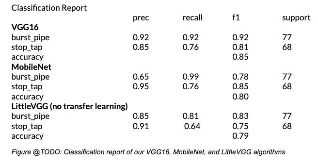

This project aims to build an image recognition algorithm to increase the efficiency of the work order reviews in water Industries
Water and sewer mains pipes are distributed around Victoria . Every Year water industries receives a more than 5 lakhs fault repairs, majority being replacing burst main. Work order is approved by Water industries which includes reviewing the images. A minimum of 20 photos are attached for each repair, and atleast 10,00,000 images are received every year. Approximately 30% of these images are reviewed manually for quality and work completion making it a tedious job. The main objective of the project is to decrease the time spent on approving the work order by use of automation.

Built Algorithm from scratch
The dataset consisted of 500 images. When an image is input into a computer they read it as three matrices of pixel values. One each for the red, green and blue colour index. The python package keras was used to import our images, and reshape them to the same size and the pixel values were normalized between 0 and 1. Using keras the dataset was split into training and test/validation data based on a percentage. I used an 80/20 split for training and validation data.
code: https://drive.google.com/file/d/1yrs32ha5ph6PoWTm2-B3OW4Ybg_jVROL/view?usp=sharing
Once processed I used Convolutional Neural Networks(CNNs) to build image recognition algorithms. CNNs are a type of deep learning that contain convolutional layers used to pick up patterns in your data, that otherwise might not be seen. Convolutional neural networks are composed of convolutional layer, a pooled layer and a fully connected layer. Two main pooling methods were used, mean pooling and max pooling. The fully connected layer integrates is the result after the image is passed through multiple convolutional layers and pooling layers to obtain the high-layer semantic feature for image classification.
Models
Different combinations of convolutional and non convolutional layers using layouts were attmepted, but found the best results using the architecture of the LittleVGG (or VGG7) network. This network consists of 7 blocks of convolutions, each ending with a dropout layer for regularization to help prevent overfitting. When training the model several other tools were used to prevent overfitting to the training data. After each step (called epoch) the algorithm would use the validation data set to test the algorithm. #insert Image

During the project, building a plethora of models were attempted using transfer learning. Three of the most popular were MobileNet, ResNet and VGG16. For each of these structured models were trained on the imagenet data set. All of the models plateaued over a much shorter amount of epochs.
MobileNet was the most impressive, hitting its highest validation loss score at only the 3rd epoch. These models had a tendency to quickly start overfitting to the training data. The most difficulty with ResNet, as it would quickly begin scoring in the 90+% accuracy on the training data, but maintaining a low accuracy on the validation data. As ResNet As ResNet had the most layers, it made sense that it would overfit with a small amount of images to train on.
Visualising Models
Once the models were trained it was important to inspect these classifiers, and attempt to verify their validity. One way this was achived was visualizing what the models were making their decisions on. This was done by creating heat maps that highlighted important pixel clusters. A function was created that found (@TODO: equation dy/dx pixels) based on the last convolutional layer. The higher this value, the more these pixels had an effect on the final result. In this way, was able to take individual images and look at what pixel clusters made them classify the image the way they did. This tool was used to double check. However, if the object that is the subject of the classification is playing the primary role on the classification it strengthens our confidence in the algorithms results.


Results
After building the models, it was checked on our test data set. This is a set of images that the algorithms had not seen, to check their performance. Similar to the results from our validation data, the models built using transfer learning performed better than our models from scratch. Looking at our VGG16 model, our MobileNet model, and our LittleVGG model trained only on our data shows us that the VGG16 model outperformed the others when comparing overall accuracy.

Although VGG16 scored a higher accuracy, it’s important to look past this score and take in all of the information in this project. it was observed that the VGG16 algorithm has the highest f1 score for classifying burst pipes, as well as high precision and recall scores.
The MobileNet does not have a high recall score for classifying these, but as an extremely high precision. For each of the algorithms, the recall score for classifying burst pipes was higher.
Our algorithm built without the use of transfer learning scored the lowest accuracy, and recall scores lower than the other two algorithms.
It can aslo be observed that the accuracies follow a general trend in that VGG16 is better than MobileNet which is better than LittleVGG. We note that in both the MobileNet and VGG16 we see a dip from training and validation to test data. This is less than 3% for the VGG16 model, but MobileNet’s accuracy dips over 7% from validation to test data. As we used early stopping based on our validation data, this is important to note as it may imply overfitting to our validation data.